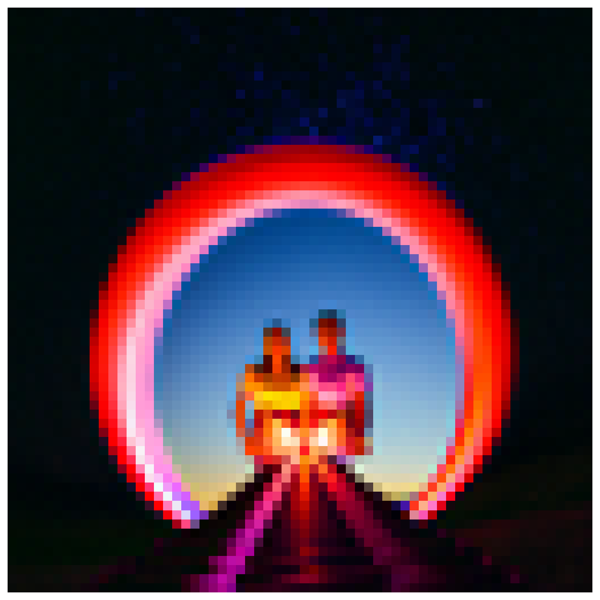
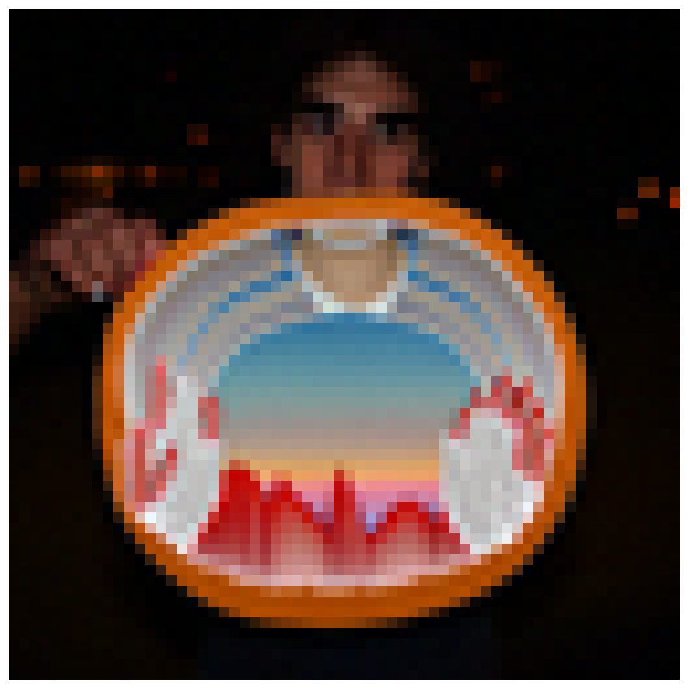
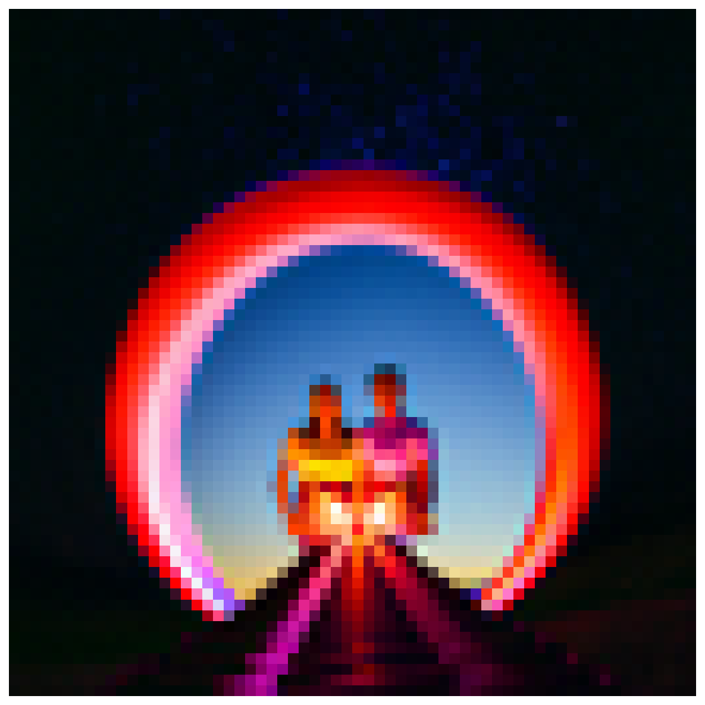
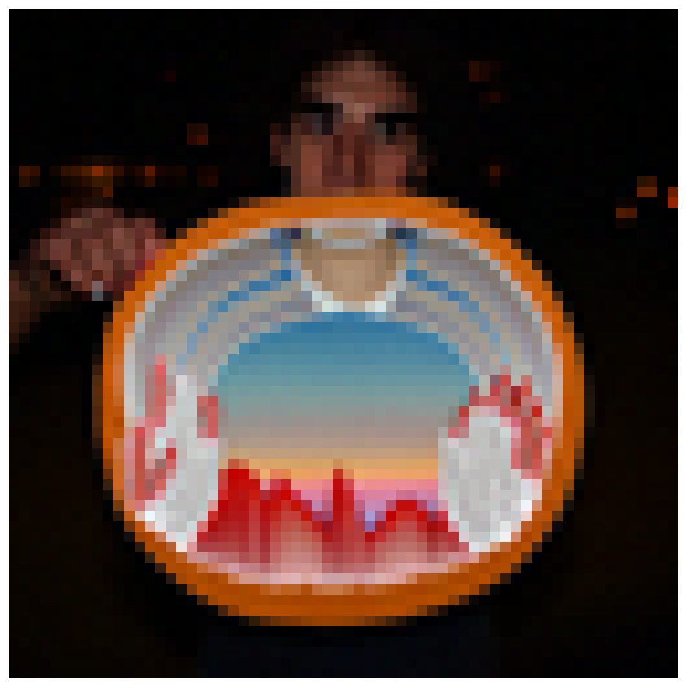
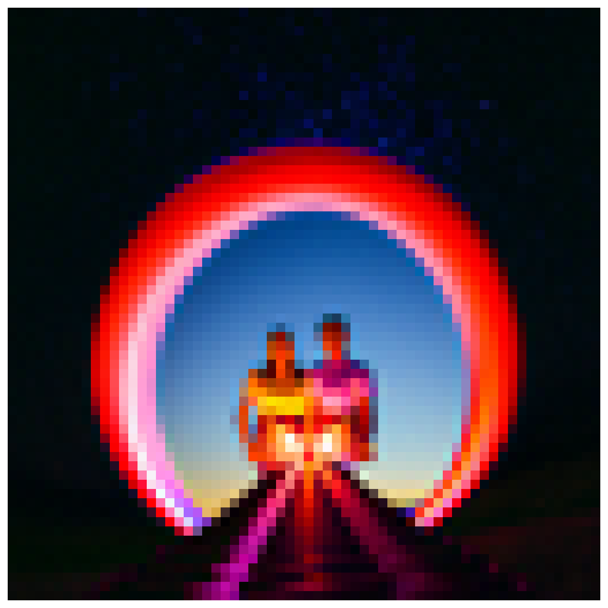
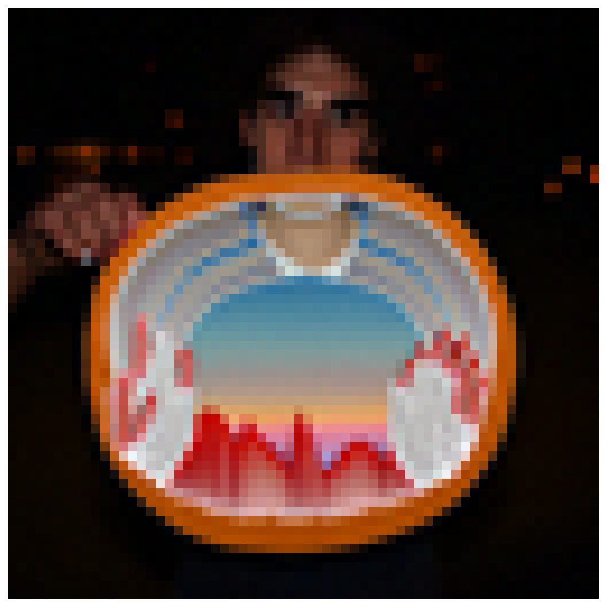
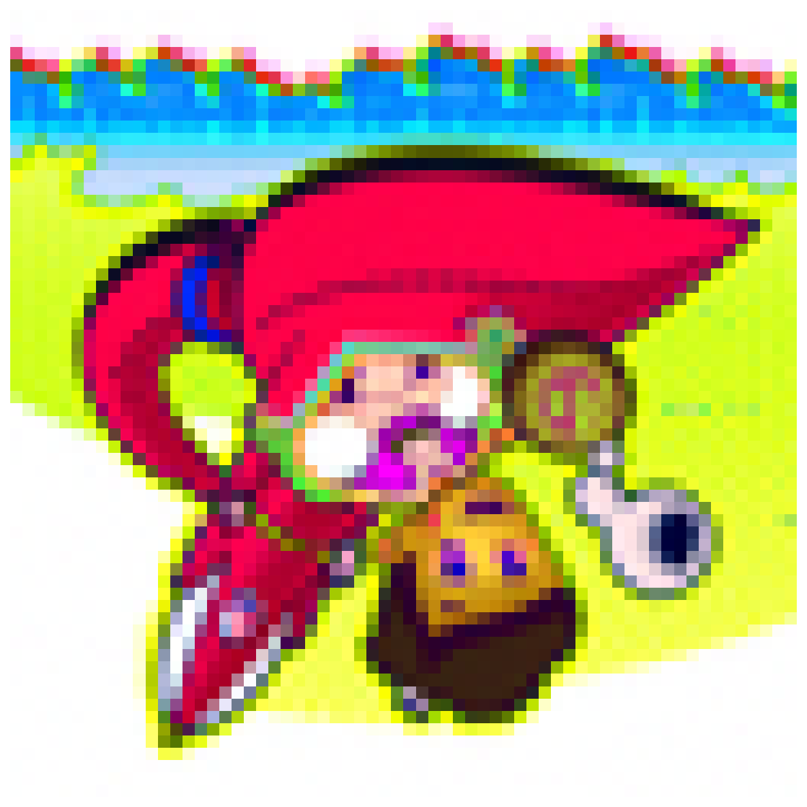
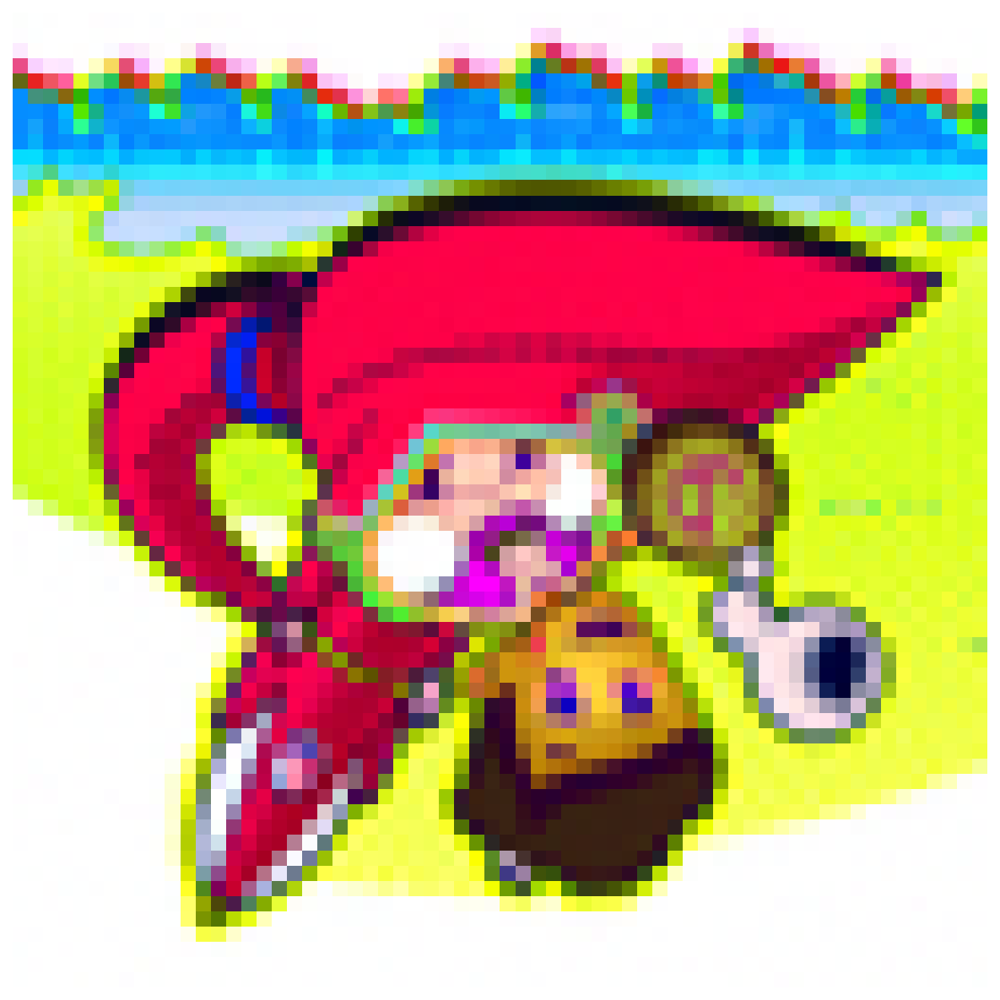

Figure 6: Original image and edits at different noise levels
TJ DiMeola
Computer Vision CSCI 581
Instructor: Dr. Hawk Wang
December 9, 2025
The DeepFloyd IF diffusion model is used in this project. DeepFloyd has been trained and released by Stability AI. Its first stage generates images with size 64×64, the second stage takes the outputs of the first stage and produces images with size 256×256.
DeepFloyd is a text-to-image model, which takes text prompts as input and outputs images based on the input text. In this project, the prompt "a high quality photo" is often used, which acts as a null prompt for unconditional generation.
Random seed = 180 (used throughout all experiments)
The forward process gradually adds Gaussian noise to a clean image according to a predefined noise schedule. The implementation adds noise at timesteps t = 250, 500, and 750.
Figure 1: Noisy images at t = 250, 500, 750
Gaussian filtering is applied to denoise the noisy images. While Gaussian blur can reduce noise, it also removes important image details and cannot selectively preserve edges.
Using a pretrained diffusion model UNet, we can predict noise and perform one-step denoising. Results show that one-step denoising works well for low noise levels (t=250) but struggles at higher noise levels (t=750).
Figure 2: One-step denoising results
Iterative denoising with strided timesteps (stride=30) significantly improves results. The process gradually removes noise over multiple steps, producing clean, recognizable images.
Figure 3: Iterative denoising process (animated)
Starting from pure random noise, the diffusion model can generate realistic images through the iterative denoising process.
Figure 4: Five generated images from pure noise
CFG improves image quality and prompt adherence by combining conditional and unconditional noise estimates with guidance scale γ=7.
Figure 5: Images generated with CFG (γ=7)
By adding noise to a real image and then denoising, we can create variations. Higher noise levels (i_start=20) produce more creative edits, while lower noise levels (i_start=1) stay closer to the original.


Figure 6: Original image and edits at different noise levels
Visual anagrams create images that reveal different subjects when flipped. By averaging noise estimates from normal and flipped orientations, we create optical illusions.
 

Figure 7: Visual anagram - "a lithograph of a skull" (left) and "a lithograph of waterfalls" (flipped, right)
Trained a UNet to denoise MNIST digits with σ=0.5 noise. The denoising task converges quickly (20 epochs) as it only needs to remove fixed-level noise.

Figure 8: Noising process at different σ values
Figure 9: Training loss curve
Full diffusion model that generates MNIST digits from pure noise using time-step conditioning with 300 timesteps.

Figure 10: Time-conditioned DDPM training loss


Figure 11: Generated samples at epochs 5 (left) and 20 (right)
Generates specific digits (0-9) on demand using class conditioning and classifier-free guidance (10% unconditioning, γ=5.0).
Denoising vs Generation: Simple denoising (Part 4.1) converges in 20 epochs, but generation from pure noise (Parts 4.2-4.3) requires 100-500+ epochs for high-quality results. At 20 epochs, loss decreases but sample quality appears degraded - this early learning paradox indicates the model needs extended training.
Computer Vision CSCI 581
University of Mississippi | Fall 2025
Download PDF Report